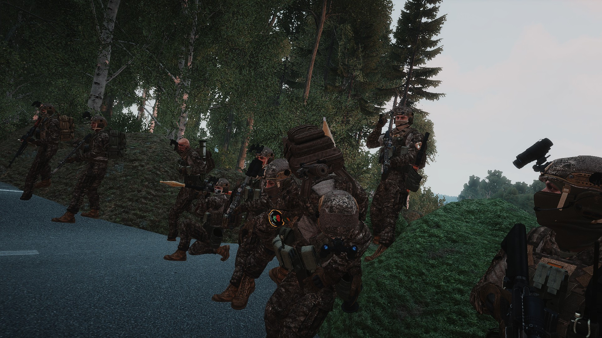
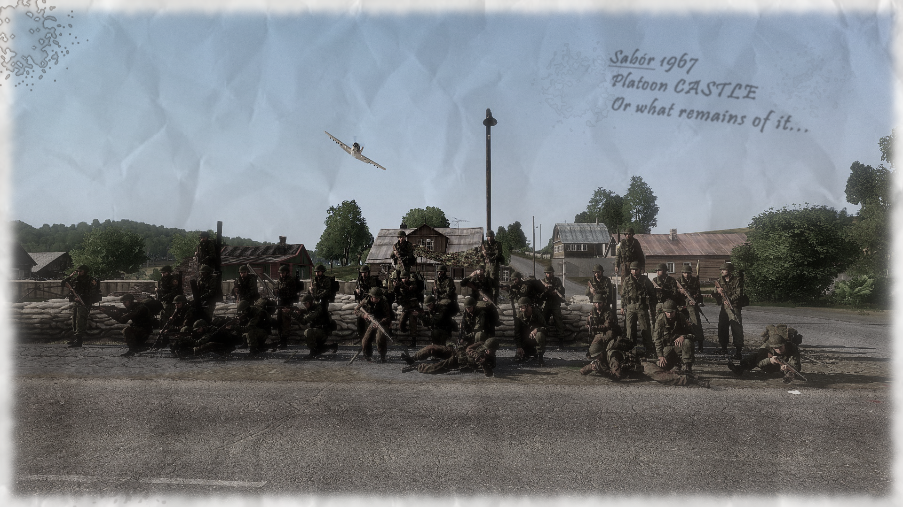
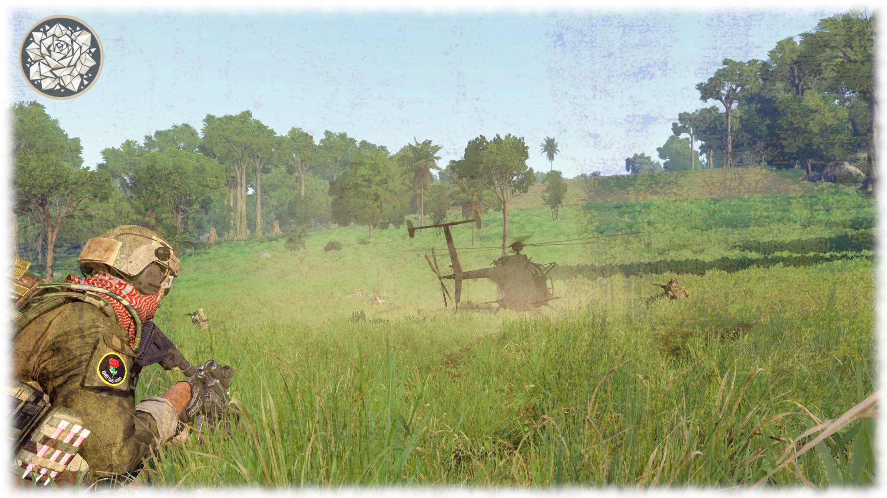

Inglourious Basterds Clan
Taktyczna symulacja militarna (Milsim) w grze Arma 3. Prowadzimy realistyczne operacje bojowe, szkolenia taktyczne i zorganizowane misje kooperacyjne. Stawiamy na immersję, dyscyplinę radiową i współpracę zespołową.
Profil Działalności
Status // Informacje o klanie i misji
Kim jesteśmy?
Grupa Inglourious Basterds Clan (IBC) operuje nieprzerwanie od 2018 roku na polskiej oraz zagranicznej scenie Arma 3. Jako grupa jesteśmy skupieni na przyjemności z rozgrywki oraz wzajemnym udoskonalaniu siebie nawzajem. Wielu z nas ma wiedzę o różnych okresach historycznych, także każdy u nas znajdzie coś dla siebie.
Nasz Styl Gry
Wyróżnia nas elastyczność w działaniu - staramy się być skuteczni niezależnie od tego, czym gramy, w jakiej roli gramy oraz w jakich warunkach klimatycznych operujemy. Potrafimy odnaleźć się w każdej sytuacji taktycznej, niezależnie od przeciwności losu.
Gramy różne rodzaje rozgrywek, od scenariuszy PvE (wewnętrzno-klanowych), przez kampanie dynamiczne, po tzw. Joint Operations (JOPy) z innymi zaprzyjaźnionymi grupami społeczności.
"Działamy nieprzerwanie od 2018 roku na scenie Arma 3, łącząc pasję historyczną i taktyczne zacięcie."
20+
Aktywnych członków
Paczka modyfikacji
skrojona pod misję
19:00
Start misji (Pt/Sob/Ndz)
Dedykowany
Serwer gry 24/7
Galeria Operacyjna
Status // Zapisy fotograficzne z pola walki




Centrum Rekrutacyjne
Status // Dołącz do naszych szeregów
Wymagania wstępne
- Ukończone 16 lat.
- Oryginalna gra Arma 3.
- Działający mikrofon i zainstalowany komunikator TeamSpeak 3.
- Chęć nauki i szacunek dla innych członków społeczności.
- Zdolność do udziału w cotygodniowych operacjach weekendowych.
Instrukcja Zaciągu
Cały proces rekrutacyjny w klanie IBC odbywa się za pośrednictwem naszego serwera Discord. Aby do nas dołączyć, wykonaj poniższe kroki:
- Dołącz do serwera Discord za pomocą przycisku poniżej.
- Wybierz odpowiednią rolę podczas dołączania do serwera - Kadet.
- Przejdź na kanał kadetów i zapoznaj się z wiadomością powitalną.